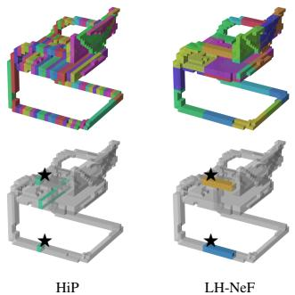

Neural Field Tokenizations with Hierarchy：视觉 foundation model 的输入/latent token 正在扩展到 3D、视频和连续场；LH-NeF 提供一种统一 token 接口的思路
把 neural field representation 从 per-sample meta-learning 推向 feed-forward tokenization，减少内循环优化的内存/时间成本。
Neural Field Tokenizations with Hierarchy and Spatial Locality Priors Alonso Urbano, David W. Romero, Max Zimmer, Sebastian Pokutta；机构信息未在 arXiv 元数据中列出。 arXiv 新增 原文链接
先说结论。视觉 foundation model 的输入/latent token 正在扩展到 3D、视频和连续场；LH-NeF 提供一种统一 token 接口的思路。 把 neural field representation 从 per-sample meta-learning 推向 feed-forward tokenization，减少内循环优化的内存/时间成本。
Figureure 1 · : LH-NeF overviewFigure 1: LH-NeF overview. (a) Observations from an input are embedded into the $C _ { \mathrm { e m b } }$ -dimensional tokenizer input space (Appx. B.1) and sorted by a locality-preserving ordering, then processed by L grouped attention blocks, yielding the tokenized representation $\bar { \mathbf { Y } } ^ { ( L ) }$ . The locality-preserving ordering ensures each group’s spatial support covers a compact region of the coordinate space $( \sqsupset / \sqsupset )$ . (b) To render the field ${ \bar { f } } _ { \theta }$ at any coordinate $x ,$ the renderer routes x to the k nearest groups, weighting each group’s contribution via a learnable Gaussian kernel. Per-group cross-attention outputs are then aggregated into $\mathbf { h } ( x )$ via a weighted sum, FiLM-conditioned on the query’s relative coordinate ${ \tilde { x } } ,$ and decoded into the field value $f _ { \boldsymbol { \theta } } ( \boldsymbol { x } )$ .这张图概括 Neural Field Tokenizations with Hierarchy 的整体方法流程。阅读时先看模块之间传递的训练信号，再看作者如何把目标拆成可优化的子问题。

Figureure 2 · : Group assignments on a 3D chairFigure 2: Group assignments on a 3D chair. Top: all groups. Bottom: routed groups for two queries (⋆).这张图来自论文 PDF 的结构化抽取。当前用于辅助理解 Neural Field Tokenizations with Hierarchy 的方法或实验，请结合正文精读段落一起看。
核心问题
视觉 foundation model 的输入/latent token 正在扩展到 3D、视频和连续场；LH-NeF 提供一种统一 token 接口的思路。